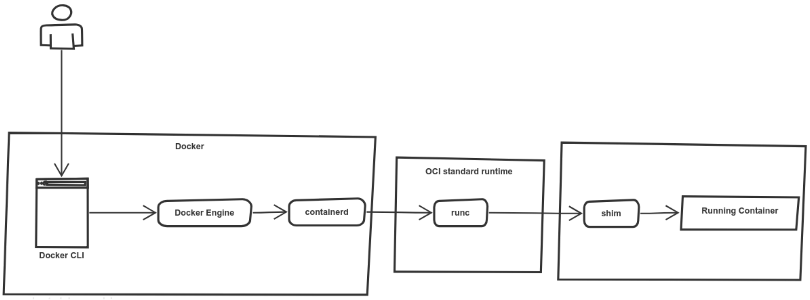

Docker Engine is the heart of the container and what makes the container to run. Docker has a modular design, which means you can swap/customize some of its components.

Docker architecture has five components:
- docker CLI
- dockerd
- containerd
- containerd-shim
- runc
runc
runc is a lightweight CLI wrapper for the libcontainer and it is used to spawn and run containers.
You can run your containers without Docker using the CLI only. To do this, you must have a bundle aligned with the OCI standards. A bundle for a container is a directory that includes a specification file named config.json and a root filesystem. config.json is used to create a container in a particular state.
An example of config.json
{
"ociVersion": "0.6.0-dev",
"platform": {
"os": "linux",
"arch": "amd64"
},
"process": {
"terminal": true,
"args": ["sh"],
"env": ["PATH=/usr/local/sbin:/usr/local/bin:/bin", ...]
...
}
Given the bundle, you can simply run the container with runc
# Creates an empty folder
mkdir ~/mycontainer
cd ~/mycontainer
# Creates rootfs, one way of doing so is to export it re-using docker
mkdir rootfs
docker export $(docker create busybox) | tar -C rootfs -xvf -
# Creates the new specification file named "config.json" for the bundle
runc spec
# Runs the container
runc run mycontainerid
Docker is a higher level abstraction over runc and runc is a CLI for libcontainer. Moreover, it is also possible to set the docker to your own runtime dockerd daemon --add-runtime.
containerd
containerd is one of the layers in the Docker's modular architecture. When you make a request to dockerd, containerd manages processes related to image distribution such as pushing/pulling them to/from registries. With the images containerd generates an OCI bundle for the container.
containerd manages the container lifecycle: it starts, stops, pauses, or deletes it. It also manages image distribution: pushes/pulls the images to/from registry.
So what do you actually get using containerd? You get push and pull functionality as well as image management. You get container lifecycle APIs to create, execute, and manage containers and their tasks. An entire API dedicated to snapshot management. Basically everything that you need to build a container platform without having to deal with the underlying OS details. more see Docker containerd integration
containerd-shim
containerd-shim allows you to have daemonless containers. How this is achieved:
containerdforks an instance ofruncfor each new containerruncprocess exits after the container is created- once a container is created by
runc,containerd-shimbecomes the new parent for the container process
You can see this by creating a docker container and checking the processes.
$ docker run -d alpine sleep 30
$ ps fxa | grep dockerd -A 3
2239 ? Ssl 0:28 /usr/bin/dockerd -H fd://
2397 ? Ssl 0:19 \_ docker-containerd -l unix:///var/run/docker/libcontainerd/docker-containerd.sock ...
15476 ? Sl 0:00 \_ docker-containerd-shim 3de8... /var/run/docker/libcontainerd/3da7.. docker-runc
15494 ? Ss 0:00 \_ sleep 30
That there is no runc used as it was replaced by containerd-shim.
containerd-shim is responsible for STDIN/STDOUT and for reporting exit status to the Docker daemon.
dockerd
dockerd is a daemon and a server that processes the Docker API requests and then utilizes containerd functionality to manage life-cycle of the containers.
docker CLI
Docker CLI is an one of the ways to talk to Docker server dockerd. You can use it to run the docker commands like docker run or docker build.
Running container

A user uses the docker CLI to execute a command:
docker container run -it --name <NAME> <IMAGE>:<TAG>Docker client sends POST request to daemon's API
- Docker daemon receives instructions and calls
containerdto start a new container containerdcreates an OCI bundle from the Docker imagecontainerdtellsruncto create a container using the OCI bundleruncinterfaces with the OS kernel to create a container- Container process starts as a child process
runcexits after starting the containercontainerd-shimtakes over the child process and becomes its parent- Container is running!